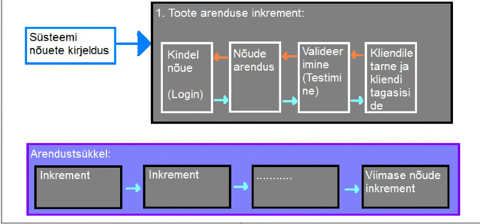

Inkrementaalnearendusmudel on üks viis kuidas lahendada kosemudeli jäika tsükli. See aitab
arendusmeeskonnal toime tulla muudatustega paremini. Muutatused võivad tulla kas äritegevustest,
kliendi soovidest, turu olukorra muutumisest, tehnoloogiate muutumisest, seaduse muutumisest või
lõppkasutaja tagasisidest. Kuna kosemudelis keset arendustööd on muudatustega toimetulek
keeruline, on kosemudeli kasutamise puhul muudatuste sisseviimine üsna kulukas, siisknkohal tulebki
appi inkrementaalne arendusmudel. Mudel ise on siis ajagraafikupõhine ja ei tugine erinevaid
kosemudelist täielikult valmiskijeldatud kuvandile. Selles mudelis saab arenada erinevaid
programiosi samaaegselt või erinevatel aegadel.
Inkrementaalses arendusmudelis aitab samaaegselt arendustööd teha kindlad tegevused mida kosemudelis ei ole. Nende tegevuste abil on võimalik kliendile kuvada programmile keskse tähtsusega osi, enne kui neid täielikult arendama haktakase . tehakse näiteks, kas mingisugune
kasutajaliidese prototüüp, või programeeritakse vähese testimise läbinud MVP (Minimal
viable product) mis omab ainult programmi nõetes kirjeldatud keskset funktsiooni. näiteks kui
tegemist on failikonverteriga, siis ei oma ta suurt kasutajaliidese kujundust, ega isegi
kõiki formaate mis lõpp-programm teisendama peab, vaid ainult demonsteerib seda
funktsionaalsust osaliselt.
| Head küljed | Halvad küljed |
|---|---|
| Kulutused on väiksemad - Kuna kasutaja nõuded on muutuvad, aga muudatusi saab sisse viia arendustsükli käigus, on nende muudaduste kulud väiksemad kuna arendustsükkel ise ei ole vaja lõpuni viia, enne muudatuste sisse viimist |
Progressi jälgimine on keeruka - Arendustöö progressi ei jälgita enam arendarud nõuete järgi, kuna need ei ole arednustöö alguses valmis, vaid progressi jälgitakse arenduskiiruspõhiselt - kui palju igas ajavahemikus nõuetest arendada on võimalik. See tekitab siis halduritele nõude, et nad vajavad pidevalt dokumentatsiooni arendustöö hetke kulgemise kohta. Kui arendustöö on ka kiire, siis vahest on ka selle kogumentatsiooni hankimine keeruline, kuna ei ole mõteet seda lihtsalt tekidagi |
| Kliendi tagasiside on kohene - olemasolevatele arendustööle saab meeskond keset arendust tagasiside, et vajadusel muuta oma nõudeid, ja seega arenduse suunda. Kilent näeb ka kui palju on tehtud |
Süsteemi struktuur aja jooksul degredeerub - kuna arendatakse juurde pidevalt uusi osi, ning ka selliseid osi mida alguses planeeritud ei olnud siis kipub arendatava toote sisemine süsteem spagetistuma. Selle vältimimiseks kulutatakse lisaressursse koodi refaktoreerimisele, et sisemine struktuur korras hoida. Kui korrashoidu ei teostata, on hilisem muudatuste ja uute valmisosade integratsioon tunduvalt keerulisem. |
| Tarne on kiirem - kilent saab juba funktioneerivad osad kohe pärast arendustöö lõppu kasutusele võtta, ning kilent saab sellest varem kasu kui näiteks tarkvaratootega, mida arendatakse jäiga arendusmudeliga |

Kuna inkrementaalne arendus ja iteratiivne arendus on lihtsalt sarnased sõnad
kipuvad nad inimestel asssi minema, aga nad tähendavad erinevaid asju.